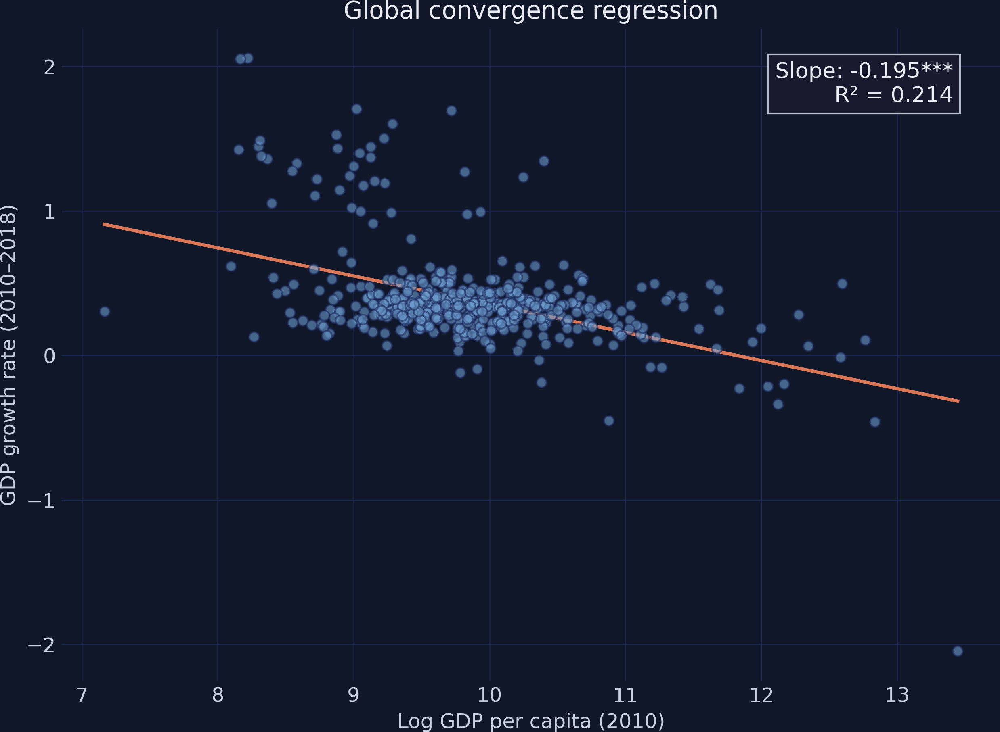
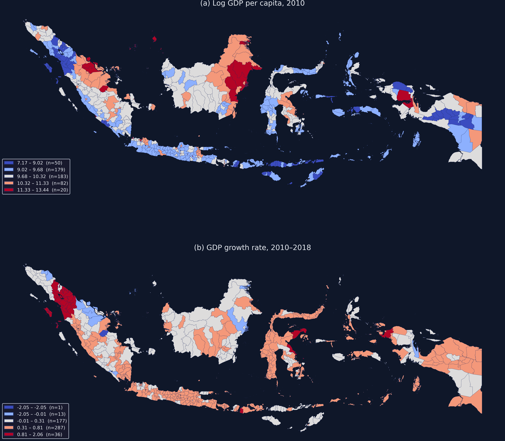
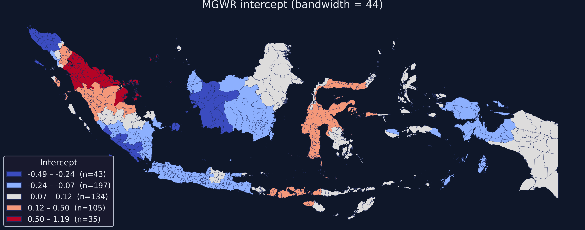
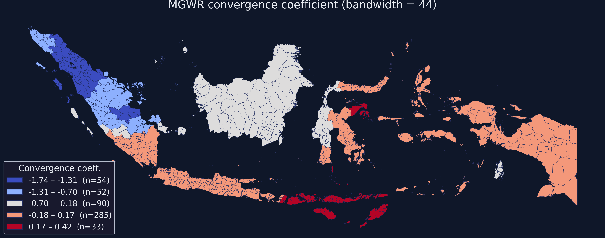
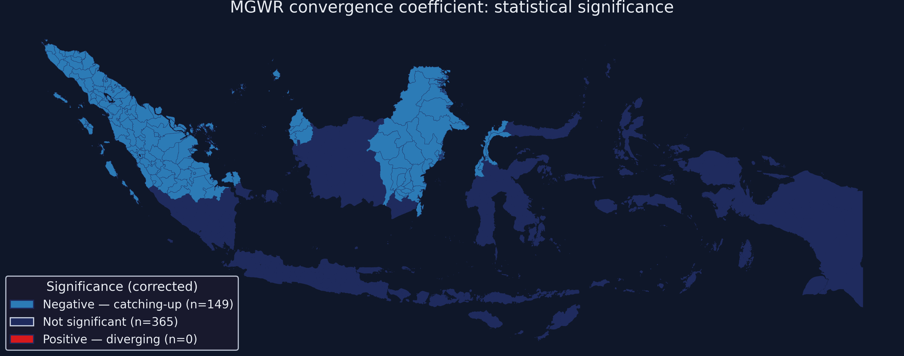

Spatially varying economic convergence across Indonesia’s 514 districts
Nagoya University (GSID)
July 8, 2026
Act I
A standard convergence test asks: do poorer regions catch up to richer ones? For Indonesia it answers with one coefficient: \(\beta = -0.195\).
But Indonesia spans 17,000 islands across 5,000 km of ocean. Should Sumatra and Papua really share the same catching-up rate?

Global \(\beta\)-convergence regression: log GDP per capita 2010 vs growth 2010–2018. One orange OLS line through 514 districts.
Act II
Cross-section from the QuaRCS repository; convergence means a negative slope on initial income.

Two-panel choropleth: (a) log GDP per capita 2010 and (b) growth rate 2010–2018. Patterns cluster — they are not scattered.
\[g_i = \alpha + \beta \cdot \ln(y_{i,2010}) + \varepsilon_i\]
A negative \(\beta\) means poorer districts grow faster — the gap shrinks. Here \(\beta = -0.195\), but it is a single number for the whole country.
\[g_i = \alpha(u_i, v_i) + \beta(u_i, v_i) \cdot \ln(y_{i,2010}) + \varepsilon_i\]
Now \(\alpha\) and \(\beta\) are functions of location \((u_i, v_i)\) — one regression per place.
The “multiscale” point: baseline conditions may vary over large regions while convergence speed shifts sharply between neighbours.
y = gdf["g"].values.reshape((-1, 1)); X = gdf[["ln_gdppc2010"]].values
coords = list(zip(gdf["COORD_X"], gdf["COORD_Y"]))
Zy = (y - y.mean(0)) / y.std(0) # standardize: required for MGWR
ZX = (X - X.mean(0)) / X.std(0) # makes bandwidths comparable
selector = Sel_BW(coords, Zy, ZX, multi=True, spherical=True)
bw = selector.search() # back-fitting finds per-variable h
results = MGWR(coords, Zy, ZX, selector, spherical=True).fit()| Variable | Bandwidth | \(ENP_j\) | Adj. \(t(95\%)\) |
|---|---|---|---|
| Intercept | 44 | 26.81 | 3.13 |
| Convergence slope | 44 | 25.27 | 3.11 |
Both variables converge on the same window here; with more covariates MGWR could assign each a very different scale.

MGWR intercept map (bandwidth = 44). Western districts negative; eastern districts positive.

MGWR convergence-coefficient map. Deep blue (\(-1.74\)) = strong catching-up; light pink = no convergence.
−1.74 → +0.42
range of the local convergence coefficient \(\hat\beta(u_i,v_i)\) · global OLS reports just \(-0.195\)
Act III
| Metric | Global OLS | MGWR |
|---|---|---|
| \(R^2\) | 0.214 | 0.762 |
| Adj. \(R^2\) | 0.212 | 0.736 |
| AICc | 1341.25 | 838.41 |
| Bandwidth | all (514) | 44 |
Adjusted \(R^2\) of 0.736 already nets out the 52 effective parameters — the gain is real, not overfitting.

Significance map: blue = significant catching-up (149 districts), grey = not significant (365), no significant divergence.
29%
of districts (149 / 514) show statistically significant catching-up — the rest are flat
Objection. A model with 52 effective parameters can always beat a 2-parameter line on \(R^2\).
Response. The adjusted \(R^2\) (0.736) already penalizes those parameters, and AICc — which explicitly penalizes complexity — falls by over 500. The bandwidth of 44 is data-selected, not tuned to inflate fit. The gain reflects genuine spatial structure, not flexibility.
Objection. Does a high local \(\beta\) prove poorer districts caused faster growth there?
Response. No. MGWR is descriptive: it shows where the income–growth association is strong, not why. The bivariate model omits human capital, infrastructure, and institutions — extending it is the natural next step.